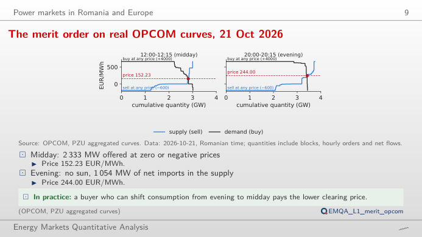
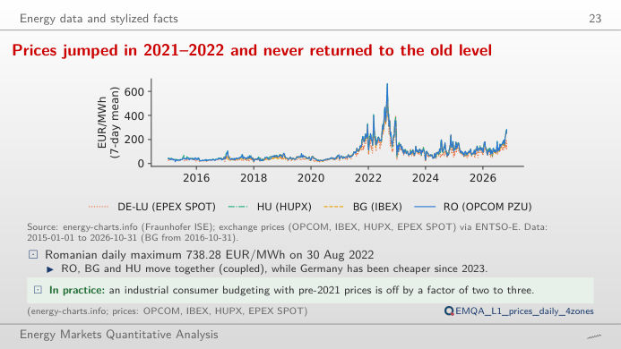
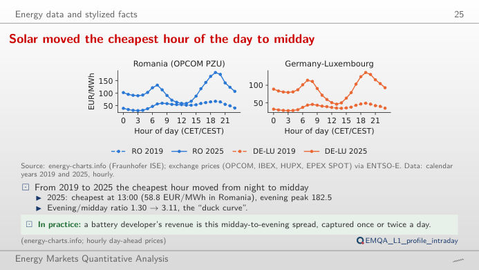
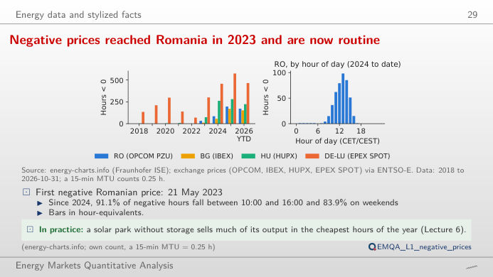
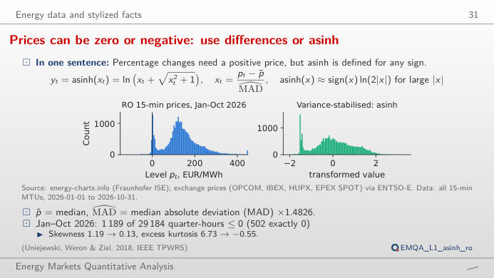
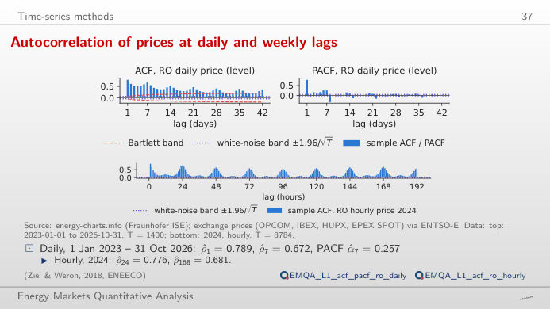

The slide of the lecture is on the left, the same figure on the right, recomputed in your browser from the course data (data/clean) when you move a control. The ▶ button moves the main parameter step by step. Under each figure: a readout, a question for the room and the Quantlet with the code of the chart.
Power markets in Romania and Europe · Energy data and stylized facts · Time-series toolkit
Power markets in Romania and Europe
The merit order on real OPCOM curves, 21 Oct 2026

Answer
About 50 MW. Near the crossing the demand curve is almost vertical: buyers bid for about 2,816 MW at 152 EUR/MWh and only about 11 MW more at 0 EUR/MWh. With 25 MW more supply the published curves clear at 131.40 EUR/MWh, with 50 MW at 0.68 EUR/MWh. In the evening interval the curves cross on a vertical segment (any price from 206.49 to 247.00 EUR/MWh clears 3,423 MW; the official price is 244.00 EUR/MWh), and 300 MW at zero price take the price to 0. Price-inelastic demand is the reason why a sunny hour can turn the price negative.
Energy data and stylized facts
Prices jumped in 2021–2022 and never returned to the old level

Answer
Set the start to 2022 and keep Romania and Germany–Luxembourg on: the 30-day averages separate for long stretches, with Romania above Germany in every summer from 2022 to 2026 (June–August means). Market coupling equalises prices only when the interconnectors are not congested; the readout gives the mean and the standard deviation of each zone over the chosen period.
Solar moved the cheapest hour of the day to midday

Answer
No. In 2016, as in 2019, the cheapest hour is 03:00, as in a market driven by demand; in 2025 it is 13:00 (58.8 EUR/MWh), because of the growth of solar capacity. The most expensive hour stays 19:00, but the ratio 19:00 / 13:00 rises from 1.30 in 2019 to 3.11 in 2025. Choose summer to see the "duck curve" at its deepest; the right panel divides each hour by the daily mean, so years with different price levels can be compared.
Negative prices reached Romania in 2023 and are now routine

Answer
Around midday, when solar output is at its maximum: in 2025, 95% of the negative hours fall between 10:00 and 16:00, most often at 13:00. Since 2024, 84% of them fall on weekends, and since 2023 about half of them in April and May (lecture numbers). Raise the threshold to 0 EUR/MWh and above: the number of very cheap hours grows faster than that of strictly negative ones.
Prices can be zero or negative: use differences or asinh

Answer
The logarithm is not defined for zero or negative prices. The area hyperbolic sine, asinh((p − median)/(c·MAD)), where MAD is the median absolute deviation, behaves like a logarithm in the tails and is almost linear near the median, and it accepts any sign. For Romania in 2025, c = 1 brings the skewness from 0.90 to 0.09 and the excess kurtosis from 4.24 to −0.24; a smaller c compresses the tails further (negative excess kurtosis), a larger c leaves the series closer to the raw prices.
Time-series toolkit
Prices remember yesterday, last week and the same hour

Answer
The price of hour h depends on the same hour of the previous day and of the same day of the previous week: daily and weekly seasonality (Romania, 2025: ρ(24) = 0.777, ρ(168) = 0.724). A next-day model therefore uses lags 24 (d−1), 48 (d−2) and 168 (d−7), as the ARX model (autoregressive with exogenous inputs) of Lecture 2. The change from the same hour of yesterday turns ρ(24) negative (−0.263, the usual sign after a seasonal difference) and keeps a weekly peak (ρ(168) = 0.296).
Day-ahead prices: OPCOM PZU (Romania), IBEX (Bulgaria), HUPX (Hungary), EPEX (Germany–Luxembourg), via energy-charts.info (Fraunhofer ISE). Aggregated supply and demand curves: OPCOM, PZU, delivery day 21 October 2026. Hour of the day in Central European Time (CET/CEST); from 1 October 2025 the 15-minute prices are averaged to the hour (profiles, ACF) or counted as quarter-hours (negative hours). Data to the cut-off of the lecture.